この動画で伝える一文
「システムは100%でないと使えない」と思っている人に、AIの答えは多数決に近く回数を増やしても100%に届かず、100%が必要なら完全一致だが表記の揺れは拾えず、95%と言うなら理由を聞き、95と98のずれは結論を覆すと伝え、精度は技術ではなく合意だ、という本人の結論を残す。
01の「何%なら、使うのか。」と、07の「精度は、合意だ。」「一緒に、決める。」だけで、同じ主張の背骨が通るようにします。02が、回数を増やしても100%にならないことを、03が、完全一致は表記の揺れを拾えないことを、05が、95と98のずれで結論が覆ることを足します。
留保は、02の「雑だから、ではない。」、03の門の外に残る語、04の「なんとなくは、危険。」、05の「嘘ではない。」、06の届かない線と途中の印、07の三つの言い方に置きます。最後は本人の結論で閉じ、視聴者への問いかけや、両論を同じ比重にしたまとめにはしません。画面と声の百分率は原稿にあるものだけです。10回のうち8回、99%、99.9%、95%、98%、90%、99%です。
視聴者
AIの結果を「100%じゃないなら使えない」と受け取る人。見終わったあと、何%なら判断に使うのかを、理由とともに相手と決められるようにします。
構成と尺
声は理由・留保・本人の結論の範囲を、文字は主張と決め語を、点と目盛りは個数・届かなさ・ずれを受け持ちます。全文字幕は足しません。写真も動画も使いません。図形と文字です。
本編107.0秒、全体112.5秒です。声は495字。5.5字/秒を仮の読み速度とすると90.0秒です。残りは、7カット×約2秒（声の前0.5秒、後ろ約1.5秒）と、07で結びを受け取る約3秒です。5.5字/秒は、過去の日本語ナレーションの実測（約5.5〜5.7字/秒）に合わせた目安で、語の読みと間で実測は変わります。制作側が声と画を合わせて調整します。2分には伸ばしません。表の秒は0.1秒単位で、合計が107.0秒になるように置いています。目標の約1:45に対し、留保を残した文量で本編は1:47.0です。尺が足りなければ、04の90%の道と、05の「書き方では、戻せない。」から詰めます。01の問い、02の届かなさ、03の表記の揺れ、05の95と98、07の合意は残します。
| カット | 区間 | この区間で分かってほしいこと | 声／画面 |
|---|---|---|---|
| 01 何%なら、使うのか。 | 0:00.0–0:12.9（12.9秒） | 100%だけを求めると、話は着地しない | 60字／25字 |
| 02 100%には、ならない。 | 0:12.9–0:33.8（20.9秒） | 回数を増やしても、一つの空きが残り、100%にならない | 104字／40字 |
| 03 表記の揺れは、拾えない。 | 0:33.8–0:52.2（18.4秒） | 完全一致は毎回同じ。表記の揺れと想定外は拾えない | 90字／50字 |
| 04 なぜ、95%なのか。 | 0:52.2–1:07.7（15.5秒） | 95%と言うなら理由を聞く。なんとなくなら危険 | 74字／27字 |
| 05 95と98で、覆る。 | 1:07.7–1:22.1（14.4秒） | 95と98のずれで、報告の結論が覆る。嘘ではない | 68字／41字 |
| 06 100%は、約束しない。 | 1:22.1–1:33.0（10.9秒） | 100%は約束しない。途中で、納得を確かめる | 49字／35字 |
| 07 精度は、合意だ。 | 1:33.0–1:47.0（14.0秒） | 精度は技術ではなく合意。何%かを一緒に決める | 50字／51字 |
| 08 エンドロゴ | 1:47.0–1:52.5（5.5秒） | 制作表示 | 0字／0字 |
字数は空白・改行を除き、句読点を含みます。画面は各カットの「画面の文字」に掲げた文言の合計です。同一文言の再登場はカットごとに数えます。07の14.0秒には、結びを受け取る約3秒を含みます。声の合計495字、画面の合計269字です。
カット表・絵コンテ
各カットの開始と終了を画像で示します。コマ画は構図の設計資料です。番号、はじめ、おわりは画像の外だけに書きます。章表示、テロップ帯、エンドクレジットは入れません。秒数・位置・角度は参考値です。制作側は動きの狙いと可読性を満たす方法を選べます。大きな画面運動を、入口と出口だけに限定しません。カメラの名前はカメラワークと切り替えの名前に合わせ、図の層だけに掛けます。
何%なら、使うのか。
0:00.0–0:12.9 / 12.9秒 ・ 主張 ・ 声60字／画面25字

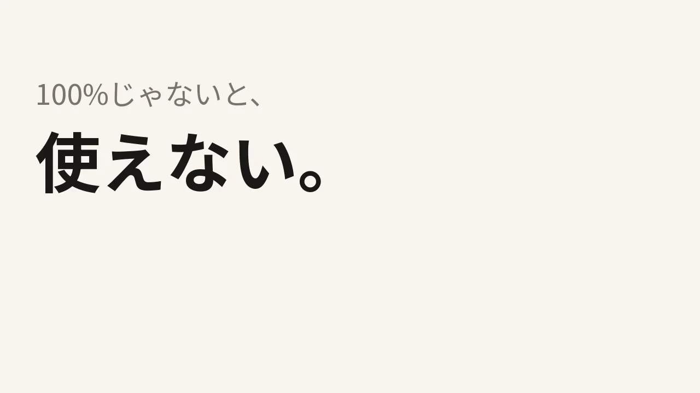

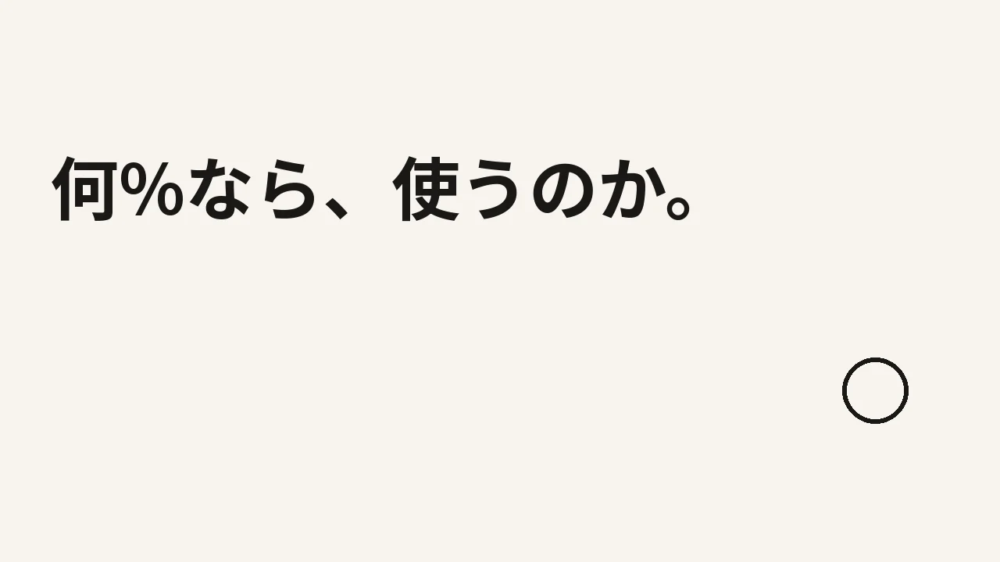
100%じゃないと、
使えない。
何%なら、使うのか。
100%じゃないなら、使えない、と言われることがあります。何%なら、使うのか。理由を説明できないままでは、着地しません。
はじめは左上の灰の一行と、その下の特大「使えない。」です。おわりは、問いの一行が画面の幅を使い、右下に空の円が一つあります。円は語に触れません。01は横の二段、07の結びは別の大きさです。
- 声は約0.5秒置いて入る。「使えない。」は行のマスクから左へ入り、声の「使えない」に着地する。
- 声の「何%なら、使うのか」で、問いの塊が右から大きく着地する。「使えない。」はこのとき上へ退き、灰の一行に残る。
- 空の円は、声の「着地しません」までに描き終わる。読む間、問いの塊は円と逆へゆっくり流す。字形は崩さない。
- 円が左へ動き、02の点の列の先頭になる。ここで止めない。
問いの塊へ、図の層を少し寄る（ドリーイン、ゆっくり）。文字は正面のまま読む。
図形と文字。空の円は、まだ置いていない線です。百分率の答えにはしません。
100%には、ならない。
0:12.9–0:33.8 / 20.9秒 ・ 見せ場 ・ 声104字／画面40字

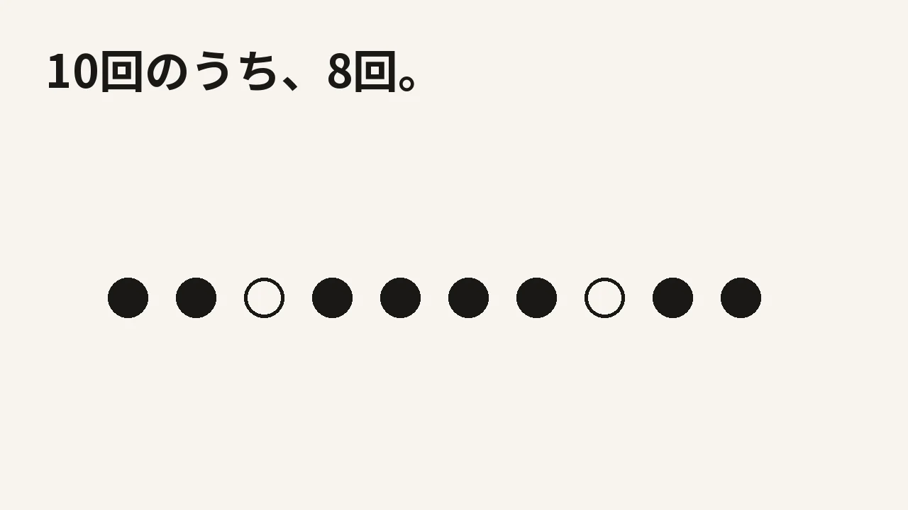

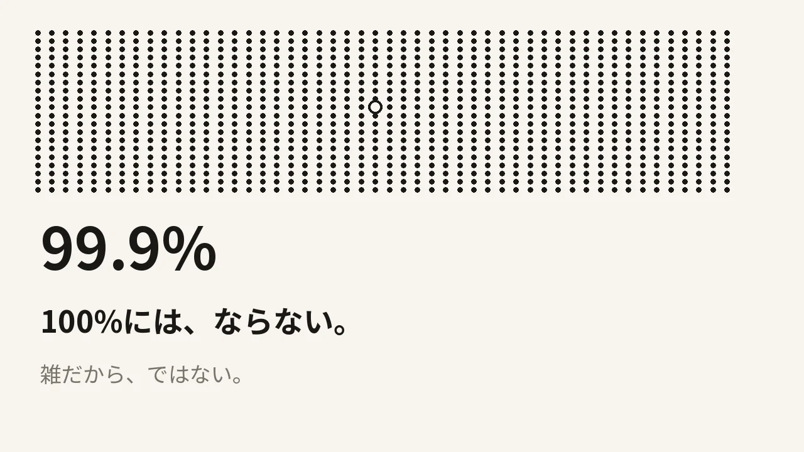
10回のうち、8回。
99%
99.9%
100%には、ならない。
雑だから、ではない。
10回中8回同じなら、もっともらしいものとして選びます。多数決に近いです。100回で99回なら99%、1000回で999回なら99.9%です。増やしても、100%にはなりません。作りが雑だからではありません。
はじめは上の一行と、下の水平な点10個です。輪郭は3番目と8番目で、端に寄せません。おわりは上半分が点の場、下に三段です。「99.9%」が大きく、「100%には、ならない。」がその下、「雑だから、ではない。」は灰でさらに小さい。点は文字の段に入れません。「99%」は途中の画面で、おわりのコマには残しません。9を1桁足したあとの「99.9%」だけを残します。
- 「10回のうち、8回。」は声の「8回同じ」に着地する。塗った点はもっともらしいもの、輪郭は選ばれなかったものです。
- 声の「99%」で、点が100個になり、99個が塗られ、1個が輪郭のまま残る。ラベル「99%」が着地する。
- 声の「99.9%」で、点が1000個になる。輪郭は一つ残る。ラベルの9が1桁だけ増えて「99.9%」になる。このあいだ、図のカメラは空の点へ寄る（ドリーイン）。空の点は埋まらない。
- 「100%には、ならない。」は声の「100%にはなりません」に、「雑だから、ではない。」は声の「作りが雑」に着地する。寄っているあいだも、近い点ほど速く流れ、文字は正面のまま読む。
- 空の点が横へ広がり、03の門の口になる。
ドリーイン。掛けるのは点の層です。空の点にピントを合わせ、周囲の点はわずかに緩くする。文字の層には掛けません。寄り切っても、輪郭は輪郭のままです。
図形と文字。点の数は、10、100、1000です。原稿の99.9%までで、99.99%は出しません。点は人の顔でも、ビー玉でもありません。
表記の揺れは、拾えない。
0:33.8–0:52.2 / 18.4秒 ・ 根拠と留保 ・ 声90字／画面50字

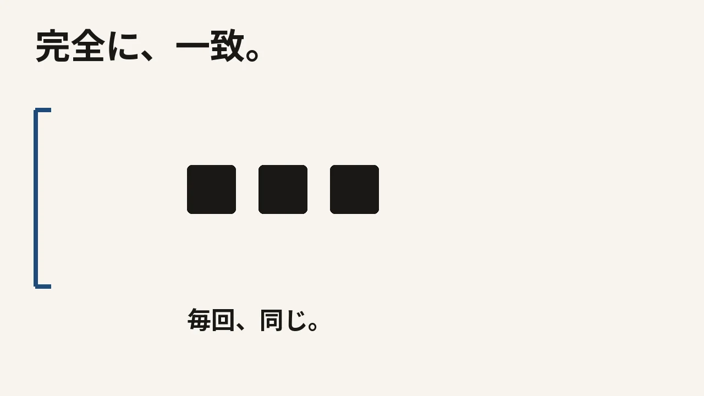

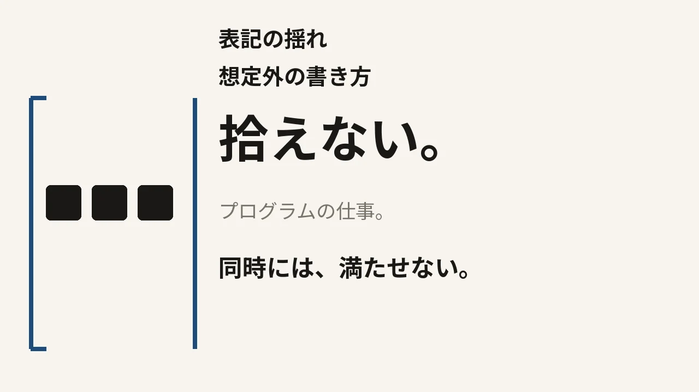
完全に、一致。
毎回、同じ。
表記の揺れ
想定外の書き方
拾えない。
プログラムの仕事。
同時には、満たせない。
100%が必要なら、完全に一致するものだけを拾います。表記の揺れも、想定外の書き方も、拾えません。一つに決まる仕事は、プログラムに任せます。AIと100%は、同時には満たせません。
はじめは左の開いた門と、その右に並ぶ同じ正方形です。上に「完全に、一致。」、下に「毎回、同じ。」。おわりは、正方形が門の内側に入り、右に語が縦に積まれます。「拾えない。」がいちばん大きい。「プログラムの仕事。」は灰で、「同時には、満たせない。」はその下です。門の外に置く語は、原稿の「表記の揺れ」と「想定外の書き方」だけです。原稿に無い文字列の対は作りません。
- 門の線が左から描かれる。三つの正方形は声の「完全に一致」で門の中へ入り、「毎回、同じ。」が着地する。
- 「表記の揺れ」と「想定外の書き方」は右から来て、門の手前で止まる。声の「拾えません」で「拾えない。」が大きく着地する。
- 「プログラムの仕事。」は声の「プログラムに任せます」に、「同時には、満たせない。」は声の「同時には満たせません」に着地する。
- 読む間、門の中の正方形は左へ、外の語は右へ、逆向きにゆっくり流す。
- 門の右の辺が横へ振れ、04の目盛りになる。
門の中から、外に残った語へパンする。語が安全域に入ったところで止める。文字は床に寝かせません。
図形と文字。正方形は、同じ形であることの印です。会社名、略称、人の名前の対にはしません。
なぜ、95%なのか。
0:52.2–1:07.7 / 15.5秒 ・ 根拠と留保 ・ 声74字／画面27字

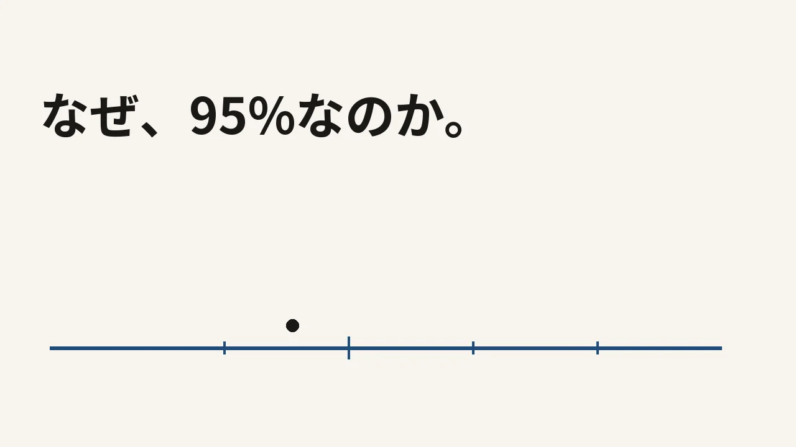

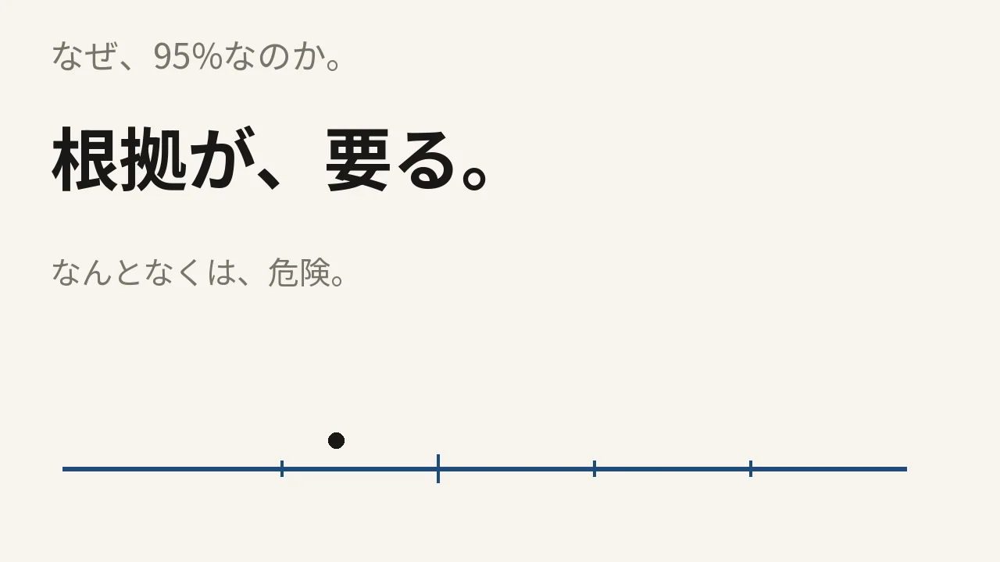
なぜ、95%なのか。
根拠が、要る。
なんとなくは、危険。
95%以上ならいい、と言われたら、なぜ95%ですか、と聞きます。なんとなくなら危険です。90%で実用になる理由を示せば、納得してもらう道もあります。
はじめは問いの特大と、下の水平な目盛りです。針は目盛りのあいだに浮いています。おわりは、問いが灰で小さく残り、「根拠が、要る。」が大きく、「なんとなくは、危険。」が灰でその下です。目盛りに95の数字は書きません。90%の道は声だけです。画面の針を、90にも95にもロックしません。
- 「なぜ、95%なのか。」は声の「なぜ95%ですか」に着地する。針は目盛りのあいだを動き、どの目盛りにも止まらない。
- 「根拠が、要る。」は同じ語に続けて大きく着地する。「なんとなくは、危険。」は声の「なんとなく」に、灰のまま残す。
- 読む間も針は浮いたまま、目盛りは少しずつ横へ流れる。90%を、決まった答えの目盛りにはしません。
- 目盛りが速く振り出され、05のホイップパンになる。
目盛りに沿って、小さくパンする。針が安全域の中に残る範囲で止める。
図形と文字。研究の最前線、予算、期間は、このカットの声にも画面にも入れません。対応は references.md。
95と98で、覆る。
1:07.7–1:22.1 / 14.4秒 ・ 見せ場 ・ 声68字／画面41字

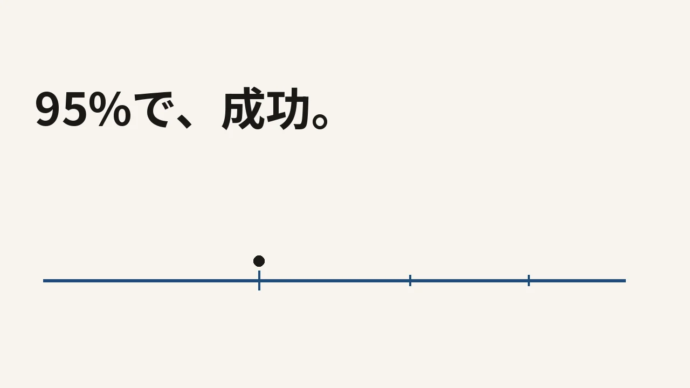

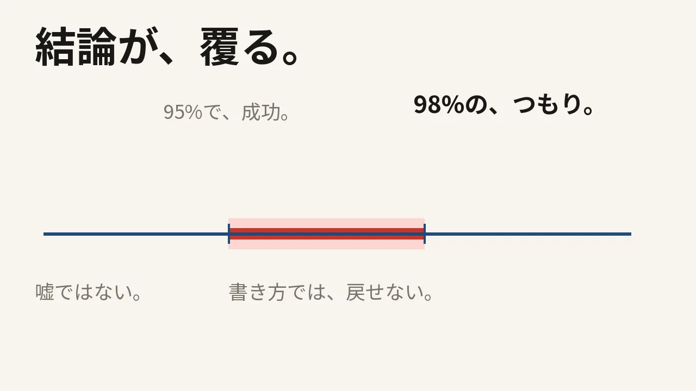
95%で、成功。
98%の、つもり。
嘘ではない。
結論が、覆る。
書き方では、戻せない。
95%で成功だと考えていました。相手は98%のつもりでした。嘘をついているのではありません。目標がずれていただけです。結論が、覆ります。
はじめは左の特大「95%で、成功。」と、針が乗った一つの目盛りです。赤はありません。おわりは、上に「結論が、覆る。」、その下の左に灰の「95%で、成功。」、右に「98%の、つもり。」です。目盛りの二つの印のあいだだけが赤です。「嘘ではない。」と「書き方では、戻せない。」は、目盛りの下に灰で置きます。赤は語に重ねません。
- 「95%で、成功。」は声の「成功だと考えていました」まで、針が乗ったまま残る。
- 声の「98%のつもり」で、図のカメラが目盛りを速く振る（ホイップパン）。振っているあいだだけ、振った方向へ短くぼかす。白く光らせて切り替えない。
- 振り終わると、95と98の二つの印が並び、あいだの帯が赤く光る。「98%の、つもり。」と「結論が、覆る。」が着地する。
- 「嘘ではない。」は声の「嘘をついているのではありません」のあいだ、灰のまま読める。「書き方では、戻せない。」は、声の「結論が、覆ります」と同時に残す。声はこの文で終わる。
- 読む間、赤い帯は光をにじませたまま、目盛りは少し流れる。帯は語へ広がらない。
- 赤い帯が縮み、06の、円に届かない線になる。
ホイップパン。掛けるのは目盛りの層です。文字は正面のまま、振りのあとで読みます。赤の光は帯だけに掛けます。
図形と文字。95と98は、原稿の「こちらは95%で成功」「相手は98%のつもり」です。赤は、大きい方が勝ち、という意味にはしません。
100%は、約束しない。
1:22.1–1:33.0 / 10.9秒 ・ 留保 ・ 声49字／画面35字

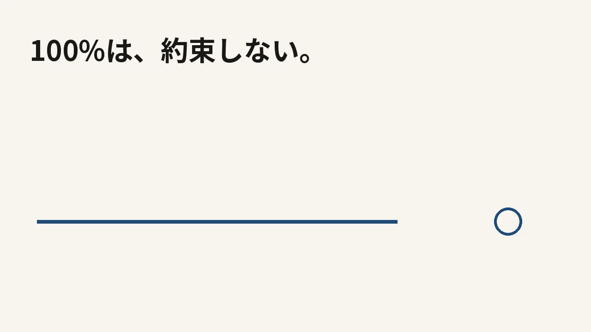

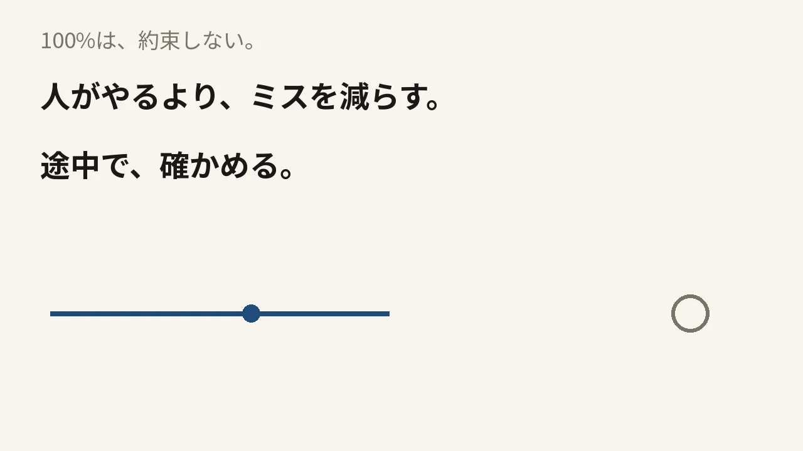
100%は、約束しない。
人がやるより、ミスを減らす。
途中で、確かめる。
100%は約束しません。人がやるよりミスを減らす目標を、一緒に考えます。途中で、納得を確かめます。
はじめは上の一行と、下の線です。線の先に開いた円があり、線は円の手前で切れています。おわりは三段です。上は灰の「100%は、約束しない。」、中が大きく「人がやるより、ミスを減らす。」、下が「途中で、確かめる。」です。線の途中に塗った印があり、開いた円はまだ右に残ります。05の赤い帯は、ここには残しません。
- 線は声の「約束しません」までに伸び、開いた円の手前で止まる。「100%は、約束しない。」が着地する。
- 「人がやるより、ミスを減らす。」は声の「ミスを減らす」に、「途中で、確かめる。」は声の「途中で」に着地する。印は線の途中に出る。
- 読む間、線は少し伸びる。円には触れない。
- 線が下へ落ち、07の結びの下の線になる。
線の切れた端から、開いた円の方へ少しパンして戻す。円と線の空きが見える位置で止める。
図形と文字。近づける努力をしても100%にはならない、という原稿の文は、02の声と、この届かない線で残します。このカットの声では繰り返しません。
精度は、合意だ。
1:33.0–1:47.0 / 14.0秒 ・ 本人の結論 ・ 声50字／画面51字

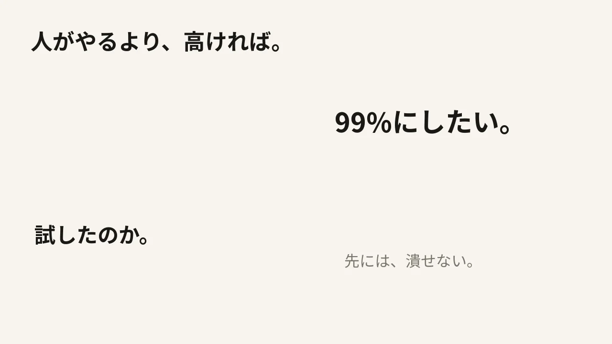

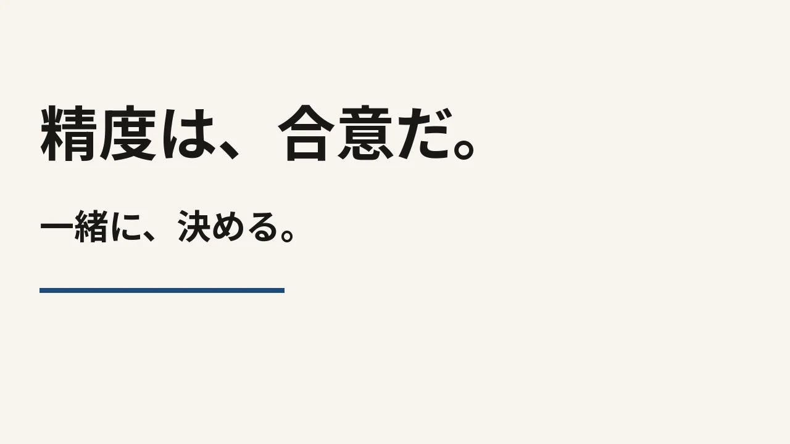
人がやるより、高ければ。
99%にしたい。
試したのか。
先には、潰せない。
精度は、合意だ。
一緒に、決める。
納得は、人によって違います。精度は、技術ではなく、合意の話です。何%かを、なぜかを、一緒に決めます。
はじめは、三つの言い方が別の位置、別の大きさです。左上「人がやるより、高ければ。」、右「99%にしたい。」、左下「試したのか。」。灰の「先には、潰せない。」は右下で、三つと列を組みません。おわりは、左の特大「精度は、合意だ。」と、その下の「一緒に、決める。」、さらに下の短い青の線です。01の問いより、下の一行が画面の幅を使います。三つの言い方は、おわりのコマには残しません。
- 三つの言い方は、声の「人によって違います」のあいだ、別々の位置で読める。「先には、潰せない。」も、そのあいだ画面に残す。声では繰り返さない。
- 三つの塊は外側へ退き、「精度は、合意だ。」が声の「合意の話」に大きく着地する。「一緒に、決める。」は声の「一緒に決めます」に着地する。
- 声の結びを受け取る約3秒、語と短い線を一つの塊として寄せて拡大する。線は語に触れない。
- そのあと画面を横へ振ってライムの全面へ渡す。白く光らせて切り替えません。
三つの言い方から特大の行へ引き、最後の約3秒は図の層を少し寄る。最後の振りは、ロゴの動きが始まる前に終えます。
図形と文字。結びは、一緒に決める、という本人の言い切りです。視聴者への問いにはしません。
エンドロゴ
1:47.0–1:52.5 / 5.5秒 ・ 制作表示 ・ 声0字／画面0字

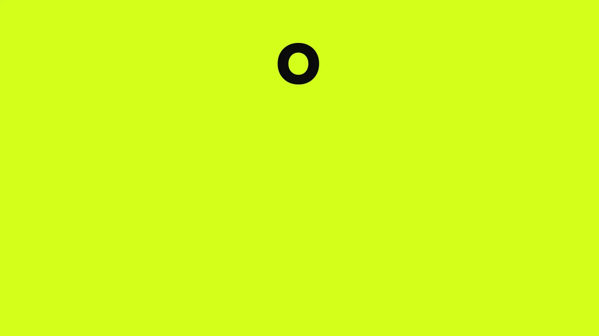

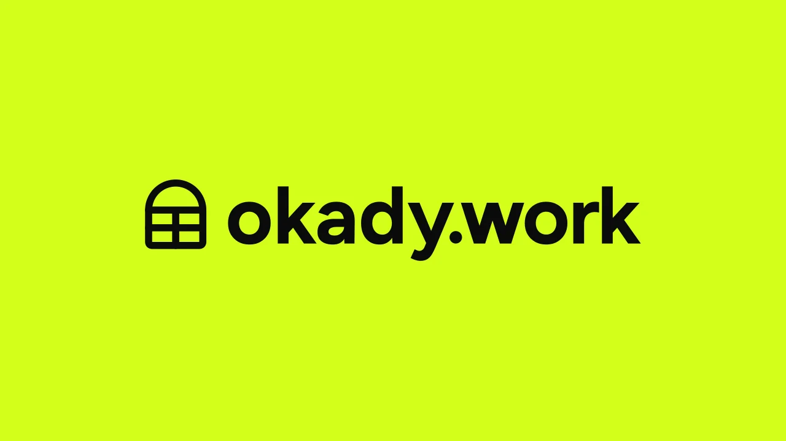
なし（ロゴのみ）
なし
背景は #d2ff1a。ロゴは中央。形、書体、色、比率は変えない。本編の要素は重ねません。
- 0–2.6秒：原本 SVG の o の落下、バウンド、定位置への移動。
- 2.6–3.2秒：全体が左へスライド。3.0–4.0秒：「.work」が一文字ずつ出現。
- 4.0–5.5秒：完成状態を1.5秒保持して終える。
ロゴの区間は固定。本編からの振りは、この動きが始まる前に終えます。
リポジトリ直下の okady-work-logo.svg。フレーム時刻から再現します。

詳細（ここから下は補足）
声・文字・素材の分担
| 担当 | 受け持つこと | 扱い |
|---|---|---|
| 声 | 着地しないこと、8回・99%・99.9%、作りが雑だからではないこと、表記の揺れと想定外、プログラム、同時には満たせないこと、なぜ95%か、なんとなくの危険、90%は理由を示せば、95と98、嘘ではないこと、100%は約束しないこと、途中で確かめること、人によって違うこと、合意 | 画面の短い語と意味を合わせる。画面の全文の朗読にはしない。カット単位のまとまった文で渡す。 |
| 文字 | 何%なら使うのか、100%にはならない、拾えない、なぜ95%か、結論が覆る、約束しない、精度は合意 | 説明の全文は載せない。三つの言い方は07のはじめだけ、縦の門と横の目盛りで組を変える。 |
| 図形 | 空の円、個数の点、門と正方形、目盛りと針、赤い帯、届かない線、途中の印、結びの短い線 | 一つの形に複数の意味を持たせない。対応は記号と色。 |
| 動画 | なし | 写真も、生成映像も、この企画の本線には使わない |
ナレーションありの構成です。音声の制作は制作側の担当で、音源がまだ無いことは引き渡しを止める理由にしません。読みは「8回＝はっかい」「10回＝じゅっかい」「99回＝きゅうじゅうきゅうかい」「100回＝ひゃっかい」「999回＝きゅうひゃくきゅうじゅうきゅうかい」「1000回＝せんかい」「99%＝きゅうじゅうきゅうパーセント」「99.9%＝きゅうじゅうきゅうてんきゅうパーセント」「95%＝きゅうじゅうごパーセント」「98%＝きゅうじゅうはちパーセント」「90%＝きゅうじゅうパーセント」です。
主張・根拠・留保の対応
| 役割 | 内容 | カット |
|---|---|---|
| 主張 | 100%だけを求めると、何%なら使うのかが決まらず、話は着地しない。 | 01 |
| 根拠 | 答えは多数決に近い。10回中8回、100回で99%、1000回で99.9%。回数を増やしても100%にはならない。 | 02 |
| 留保 | 間違えるのは、作りが雑だからではない。 | 02 |
| 根拠 | 100%が必要なら、完全に一致するものだけを拾う。答えは毎回同じになる。一つに決まる仕事はプログラムに任せる。 | 03 |
| 留保 | 表記の揺れと想定外の書き方は拾えない。AIと100%は、同時には満たせない。 | 03 |
| 根拠 | 95%以上ならいい、と言われたら、なぜその数字かを聞く。 | 04 |
| 留保 | なんとなくなら危険である。90%で実用になる理由を示せば、納得してもらう道もある。 | 04 |
| 根拠 | 95%で成功だと思っていた側と、98%のつもりだった側がいると、報告の結論が覆る。 | 05 |
| 留保 | どちらかが嘘をついているのではない。目標がずれていた。書き方では戻せない。 | 05 |
| 留保 | 100%は約束しない。人がやるよりミスを減らす目標を一緒に考える。納得は途中で確かめる。 | 06 |
| 留保 | 納得の物差しは人によって違う。先に全部は潰せない。 | 07 |
| 結論 | 精度は、技術ではなく、合意の話である。何%かを、なぜかを、一緒に決める。 | 07 |
原稿の文との対応、画面の文言と要約の区別、この動画に載せなかった論点は references.md。
企画側／制作側
| 企画側で用意するもの | 制作側で仕上げるもの |
|---|---|
| 現行の文言、声の原稿、配分、絵コンテ16枚、原稿との対応、演出の採否 | three.js と文字層の実装、細かな動きと同期、ナレーション、代表区間の試作と全編の書き出し |
| 静止コマの文字配置の点検 | 動いている全カットの安全域と重なりの検査、実速再生 |
企画と絵コンテはこの一式です。ナレーションと本編は制作側が担当します。BGMと効果音は、この企画では作りません。これ以外の画像や動画が必要になったら、必要な内容を企画側へ返します。制作側は動画AIで新規の素材を作りません。
requestAnimationFrame のループを本編の動きにしません。ナレーションの候補は Gemini 3.8 Flash TTS、または Eleven v4。名称はユーザー指定の候補で、実行時に識別子を確認します。キーは環境変数から読み、値は書きません。デザインシステム（映像の文字・色・グリッド）
紙色 #F7F4EE、墨 #1A1916、灰 #7A746C、目盛りと門の青 #1F4B7A、ずれの赤 #C5362B、赤の暈 #FCD6D0。ライム #d2ff1a はロゴだけに使います。文字は Noto Sans JP、見出し700–900、補足400–500。制作側が OFL に沿って用意します。このフォルダには同梱しません。企画書の配色とは別です。
| 段 | 1920×1080の参考値 | 用途 |
|---|---|---|
| 大きな語 | 140–200px | 01の「使うのか。」、02の「99.9%」、03の「拾えない。」、04の「根拠が、要る。」、05の「結論が、覆る。」、07の「精度は、合意だ。」 |
| 主文 | 80–120px | 01の「使えない。」、02の「100%には、ならない。」、03の「同時には、満たせない。」、06の「ミスを減らす。」 |
| 短い語 | 40–64px | 灰の留保、07のはじめの三つの言い方、目盛りの周りの短い行 |
外側余白は96pxを目安にします。文字の安全域は左右64px、上下48px。1280×720の絵コンテでは左右48px、上下36pxです。01は左の特大から幅の広い問い、02は上の点と下の三段、03は左の門と右の積み、04は問いから「根拠が、要る。」、05は一つの目盛りから二つの目盛りと赤、06は届かない線、07はばらけた三つの言い方から左の特大です。
動きの言語
| 動作 | 意味と使う場所 | 読む間・次へのつながり |
|---|---|---|
| 問いが着地し、円が残る | 01。100%だけでは着地せず、線はまだ空である。 | 塊を逆へ流し、円を02の点の先頭にする。 |
| 点が増え、空が残る | 02。10個、100個、1000個。近い点ほど速い。9が1桁増える。 | ドリーインのあいだも空の点は埋まらず、門の口へ渡す。 |
| 門が、同じ形だけを入れる | 03。完全一致は中へ入り、表記の揺れと想定外は外に残る。 | 中と外を逆へ流し、門の辺を04の目盛りにする。 |
| 針が、目盛りに乗らない | 04。95%の理由が、まだ無い。 | 針を止めずに、目盛りを05のホイップパンへ渡す。 |
| 二つの目盛り、あいだが赤い | 05。95と98が並び、ずれが光る。 | 帯を語に広げず、06の届かない線へ縮める。 |
| 線が、円の手前で止まる | 06。100%は約束しない。印は途中にある。 | 線を少し伸ばしても円に触れず、07の下の線にする。 |
| 三つの言い方が退き、合意が着地する | 07。物差しは人によって違い、結びは一緒に決める。 | 結びの約3秒も塊を寄せ、横振りでロゴへ渡す。 |
1字ずつの常時の揺れ、拍ごとの脈動、文字の崩壊は使いません。文字を読ませるために画面全体を静止させず、文量、動かす層、構図で調整します。イージングの値と秒の同期は制作側の裁量です。決め語を声のどの語に合わせるかは、各カットに書いてあります。
記号と色
| 記号 | 意味 |
|---|---|
| 墨の大きな語 | 本人の決め語。01の「使うのか。」、03の「拾えない。」、05の「結論が、覆る。」、07の「精度は、合意だ。」 |
| 灰の語 | 留保か、前の状態。02の「雑だから、ではない。」、04の「なんとなくは、危険。」、05の「嘘ではない。」と「書き方では、戻せない。」、07の「先には、潰せない。」 |
| 塗った点 | もっともらしいものとして選ばれた答え。人の顔ではない |
| 輪郭の点、空の円 | 選ばれなかった一つ。100%に届かない先。01と02と06 |
| 青の門と、同じ正方形 | 完全に一致するものだけを拾う。03だけ |
| 門の外の語 | 表記の揺れと、想定外の書き方。原稿の呼び方のまま。文字列の対は作らない |
| 青の目盛りと、乗らない針 | まだ理由の無い95%。04。針は目盛りにロックしない |
| 赤い帯 | 95と98のずれ。05だけ。大きい方が勝ち、という意味にはしない |
| 線の途中の印 | 途中で、納得を確かめる位置。06 |
| 結びの短い青の線 | 一緒に置いた線。07。100の円にはしない |
キャラ設定
人物、顔、手は描きません。点は人の姿ではありません。吹き出しは出しません。会社名、製品名、SNSの画面は出しません。
差し替え候補
ビー玉が漏斗に落ち、数個こぼれる映像は、AI生成・未承認・未生成です。今回は生成しません。本線は、制作側が描くドットです。10個のうち8個、100個のうち99個、1000個のうち999個、と増えても、空の点が一つ残ります。
点は02のあいだ、同じ描き方で続きます。一部の点だけを、別の生成映像や実写にはしません。ビー玉を後から使う場合は、点が出る区間の質感を揃え、クレジット消費の承認が要ります。この企画では、その承認をしていません。
素材
| ファイル | 役割 | 使用区間 |
|---|---|---|
assets/storyboard/cut-XX-start.webp と cut-XX-end.webp | 絵コンテ16枚。1280×720。08はライム。ほかは明るい紙色の図形と文字 | 本編に貼る完成素材ではない |
| okady-work-logo.svg | エンドロゴ | 08の全区間。リポジトリ直下の原本。一式を移すときもこの相対位置を保つ |
新たに取得する写真、動画、フォントファイルはありません。Noto Sans JP は制作側が用意します。このフォルダには同梱しません。
音
BGMと効果音は、この企画では作らない。検討もしない。
根拠
原稿との対応は references.md。演出候補の確認と採否は effects-direction.md。採否の履歴を、本編の作業手順には混ぜません。
完成条件・確認状態
- 01と07で、何%なら使うのかという問いと、精度は合意だという本人の結論まで閉じる。
- 02は、10個のうち8個、100個のうち99個、1000個のうち999個を、同じ描き方の点で見せる。9は1桁だけ増え、寄っても空の点は埋まらない。99.99%は出さない。
- 03は、完全一致が門の中に入り、原稿の「表記の揺れ」と「想定外の書き方」が外に残る。原稿に無い文字列の対は作らない。AIと100%は同時には満たせない、を声と画面に残す。
- 04は、なぜ95%かを聞き、なんとなくなら危険であることを残す。針は目盛りにロックしない。90%は、理由を示せば納得の道がある、という声の条件つきのままにする。
- 05は、95と98のあいだを赤くし、嘘ではないことと、書き方では戻せないことを残す。赤は語に重ねない。
- 06は、100%を約束しない線と、途中で確かめる印を残す。
- 点は顔にしない。人物、企業名、企業ロゴ、SNSの画面は出さない。
- 章表示、テロップ帯、エンドクレジット、白フラッシュは入れない。エンドロゴはライムの単独画面で、原本の動き、中央、1.5秒の保持を再生して確認する。
- 絵コンテ16枚（1280×720）を、左右48px・上下36pxの安全域、文字同士、文字と図形（点、門、目盛り、赤い帯、円、線）の交差で検査した。はみ出し0、文字同士の重なり0、文字と図形の交差0。相対輝度（0.2126R＋0.7152G＋0.0722B）の平均は、書き出した16枚で235.7、最小は08おわりの221.2（背景 #d2ff1a）。紙色のコマは02おわりの226.2が最小。ロゴの字形と、08はじめの o はこの検査の文字対象外。終了ロゴのインクは安全域の内側（左235px・上292px・右1043px・下426px）。この検査は静止コマの配置で、本編の合格ではない。
- 本編は未制作。実速再生は未確認。制作側は全カットを0.25秒ごとに取り、左右64px・上下48pxの安全域、文字同士、文字と図の交差を検査する。声の語の時刻と画面の変化を並べ、3秒以上変化のない区間を名指しする。最初の試作は02と05。そのあと07–08、最後に全編を確認する。